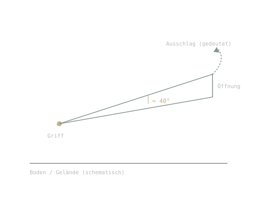
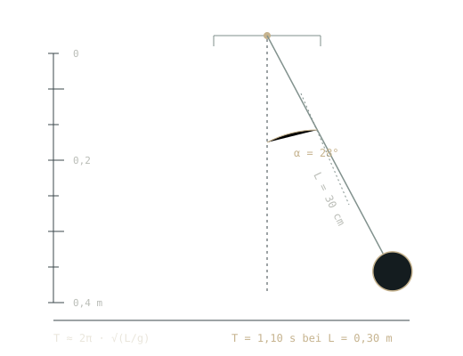
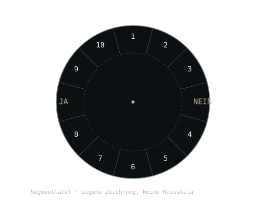
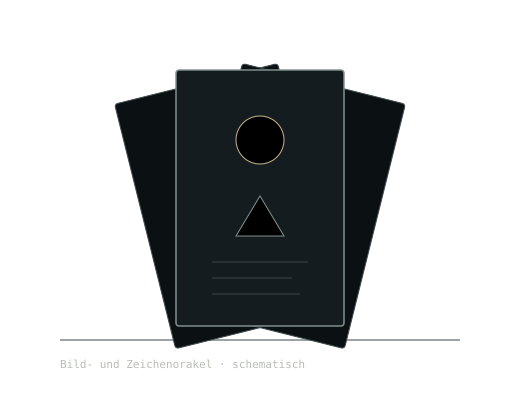

Radiästhesie
Rute, Winkelrute und Biotensor: wie sie geführt werden, welche Formen überliefert sind und was Feldversuche dazu ergeben haben.
- Rute, Winkelrute, Biotensor
- Geschichte seit dem Bergbau
- Feldtests und Ideomotorik
Themenmodul · Instrumente und Deutung
Wie Rute, Pendel und Tafel gedeutet werden, was darüber dokumentiert ist — und wo die Grenze zwischen Erfahrung und Beleg verläuft. Ein Bereich über Tradition, Instrumente und prüfbare Fragen.

01 · Einstiege
Radiästhesie ist der Oberbegriff für die Arbeit mit Rute und Pendel. Orakel ist der weitere Bereich der Deutung. Die Seiten trennen beides, statt es zu einem Sammelthema zu verrühren.

Rute, Winkelrute und Biotensor: wie sie geführt werden, welche Formen überliefert sind und was Feldversuche dazu ergeben haben.

Pendelarten, Materialien, Tafeln und Skalen. Woher die Bovis-Skala kommt, warum sie keine SI-Einheit ist und wie ein Pendel mechanisch schwingt.

Vom Pendelorakel zu Tarot, Runen und I Ging: was mantische Verfahren verbindet, was sie unterscheidet und welche Erklärungen es für ihre Wirkung gibt.
02 · Lesart
Jede längere Aussage trägt eine dieser Marken. Sie sagt, auf welcher Ebene die Aussage gilt — nicht, wie überzeugend sie ist. Reine Traditionsdeutung bleibt unmarkiert und steht im Fließtext.
03 · Werkstatt
Die Werkstatt zeigt Mechanik und Statistik, nicht verborgene Informationen. Jede Karte nennt ihren Stand, bevor sie angeklickt wird.
Länge, Auslenkung und Dämpfung einstellen; Schwingungsdauer ablesen und mit der Formel vergleichen.
Tafeln beschriften, Farbstil wählen, als SVG oder Druckvorlage ausgeben.
Verblindete Testreihe mit festgelegtem Ziel, Zufallserwartung und Konfidenzintervall.
04 · Nachbarschaft
Getrennte Systeme, keine Vermischung: Diese Bereiche werden verlinkt, nicht eingemeindet.
Radiästhesie · Instrument und Geste
Oberbegriff für Ruten- und Pendelpraxis
Ruten und Pendel sind Werkzeuge der Hand. Der Bereich zeigt, wie sie geführt werden, welche Instrumente überliefert sind und was kontrollierte Untersuchungen über die Treffer ergeben haben.
Radiästhesie ist der Sammelbegriff für Praktiken, bei denen mit Rute, Pendel oder Biotensor verborgene Strukturen, Stoffe oder Zustände angezeigt werden sollen. Der Begriff bündelt sehr unterschiedliche Werkzeuge: die gegabelte Wünschelrute, die schwenkbare Winkelrute, den teleskopierbaren Biotensor und das an einem Faden hängende Pendel. [S1]
Der gemeinsame Kern ist eine Geste: Das Instrument wird locker gefasst, der Körper bleibt ruhig, und ein Ausschlag — Schwingung, Drehung, Neigen — wird als Anzeige gelesen. Diese Anzeige ist keine ablesbare Zahl. Sie muss gedeutet werden, und genau deshalb ist die Praxis von Schulen und Absprachen abhängig.
Drei Grenzen, die auf jeder Seite gelten. Radiästhesie ist nicht dasselbe wie Divination. Bovis-Werte sind keine physikalische Einheit. Ein Ausschlag ist kein Messwert, ohne dass Kalibrierung, Blindprotokoll und Fehlerbereich benannt sind.
Die überlieferte Handhabung ist in drei Schritte gegliedert. Sie ist körperlich beschrieben, nicht energetisch begründet — jede Deutung steht als Tradition daneben.
Die Rute liegt locker in den Handflächen, die Daumen zeigen nach oben. Die Ellbogen bleiben nah am Körper, damit der Ausschlag nicht von der Schulter kommt.
Erst wenn das Instrument ruhig liegt, beginnt der Gang. Wer zu schnell geht, erzeugt den Ausschlag selbst — dieser Einwand ist Teil der Praxisdiskussion, nicht nur der Kritik.
Über einer vermuteten Stelle kippt die Rute nach oben oder unten. Ob das „ja“, „nein“ oder „hier“ bedeutet, legt die Anwenderin vorher fest — oft mit einer Probe an bekanntem Ort.
Die Prüfbarkeit ist der Knackpunkt: Eine Rute schlägt immer aus, auch über einer leeren Fläche. Aussagekräftig wird sie erst, wenn Ziel und Erwartung vor dem Versuch feststehen und die Person nicht weiß, wo das Ziel liegt.
Ruten wurden historisch bei Wasser- und Erzsuche eingesetzt.
In Quellen des 16. bis 19. Jahrhunderts dokumentiert. Belegt die Praxis, nicht die Trefferquote.
Anwender berichten von wiederkehrenden Ausschlägen an bestimmten Orten.
Erfahrungsbericht. Ohne Protokoll nicht von Erwartungseffekten zu trennen.
Ein „Erdstrahlen“-Feld soll den Ausschlag verursachen.
Hypothese ohne physikalische Grundlage; kein Messaufbau hat ein solches Feld gezeigt.
Der Ausschlag entsteht durch unwillkürliche Handbewegungen.
Bewegungsanalysen und Blindversuche stützen den ideomotorischen Mechanismus. Belege
Rutengehen findet Wasser zuverlässiger als der Zufall.
In kontrollierten Feldtests nicht bestätigt; Trefferquote auf Zufallsniveau. Belege
Die Kennungen sind Beispiele für die Darstellung. Die endgültigen Aussagen und Belege legt die Redaktion im Rechercheauftrag ESOW-RAD-02 fest.
Wer die Instrumente ausprobiert, sollte das mit einer eigenen Fragestellung tun: Ziel vorher notieren, Reihenfolge zufällig wählen, Ergebnis danach vergleichen. Das ist kein Angriff auf die Praxis — es ist die einzige Art, aus einer Erfahrung eine überprüfbare Aussage zu machen.
Für die weitere Lektüre heißt das: Die historischen und handwerklichen Teile dieses Bereichs sind gut belegt. Die Wirkungsaussagen sind es nicht, und werden es ohne belastbare Tests auch nicht.
Kein Ersatz für ärztliche oder technische Prüfung. Ruten und Pendel eignen sich nicht zur Suche nach Leitungen, zur Bewertung von Bauplätzen oder zur Beurteilung von Gesundheit. Für solche Fragen gibt es zugelassene Verfahren.
Musterstand: Die Redaktion prüft jede Quelle vor Veröffentlichung erneut auf Volltext, Interessenlage und Abrufdatum. Marker wie [S1] im Text springen hierher.
Service · Nachschlagen
Begriffe aus Radiästhesie, Pendeln und Orakel — kurz erklärt, mit Verweis auf die Stelle, an der sie ausführlich stehen. Die Stufe nennt die Herkunft des Begriffs, nicht seine Gültigkeit.
2 Begriffe
3 Begriffe
2 Begriffe
2 Begriffe
Das Glossar wächst mit der Redaktion. Vorschläge werden im Quellenverzeichnis vermerkt, damit nachvollziehbar bleibt, wer welchen Begriff ergänzt hat.